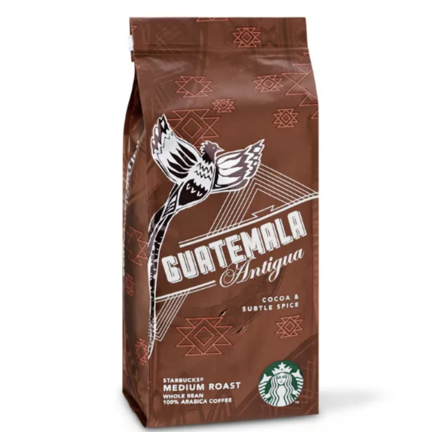

Starbucks Red Cups are BACK!

De blaadjes vallen nog, maar de wintermaanden zijn begonnen en dat betekent: Starbucks Red Cups zijn terug!
Probeer dit seizoen onze nieuwe Praline Cookie Hot Chocolate voor een echt feestelijk gevoel of geniet van de feestelijke favorieten Gingerbread Latte, Toffee Nut Latte en Stroopwafel Latte nu ze terug zijn voor een nieuw jaar 🎄 Limited edition en exclusief bij Starbucks.
Bestel nu direct aan je deur via Uber Eats of Thuisbezorgd.
Starbucks® Delivers
JOUW FAVORIETEN BEZORGD AAN HUIS!

Mis dit voorjaar nooit meer een drankje met Starbucks® Bezorgd.
Geniet van al je favorieten aan en knus op je bank terwijl je je favoriete serie bingewatcht
We bezorgen tot aan je deur, zodat je kunt genieten van je Iced Latte of Caramel Frappuccino in de comfort van je eigen huis.
Bestel nuStarbucks Verhalen
Blijf op de hoogte van onze laatste Starbucks verhalen en nieuws.
ontdek meerOver ons
Ontdek meer over ons bedrijf en geschiedenis
ontdek meerStarbucks® Bezorgd
Genieten van je favoriete Starbucks® drankjes vanuit het comfort van je huis is dichterbij dan je zou denken.
Het is de koffie die je kent en waar je van houdt, in je favoriete mok. Kijk of bezorging bij jou in de buurt mogelijk is. Start je bestelling om je Starbucks® favorieten te laten bezorgen via Uber Eats en Thuisbezorgd.
Bestel nu